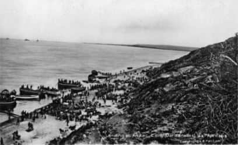
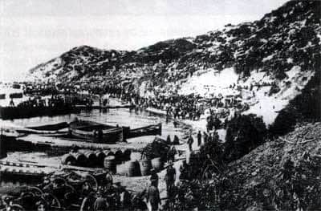
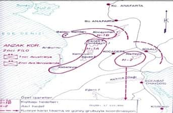
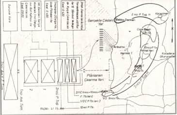
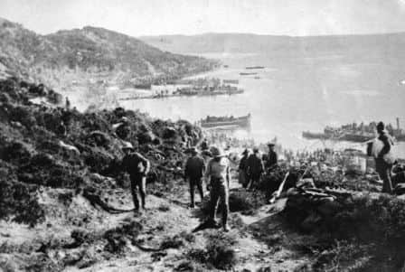

Arıburnu’na Çıkarma Yapan 3. Avustralya Tugayı

Arıburnu’na çıkan 3. Avustralya Tugayı[47]
Müttefik kuvvetleri 24-25 Nisan gecesi hazırlıklarını bitirmiş hareket başlamıştı. İlk hücum dalgasını 1. Avustralya Tümeni’nin Albay Singlair Mac Lagan komutasındaki 3. Tugayı teşkil edecekti. Bu tugay dört taburlu ve 4 bin kişiyi aşkın birliğe sahipti.

25 Nisan’da Anzak koyu[48]
Birlikleri Queen, Prince of Wales, London muharebe gemileri ve yanlarında bulunan 12 filika ile çıkarma yapılacaktı. Gemiler ortalama 500 asker alacak, üç muharebe gemisinden toplam 1.500 asker ilk dalga olarak sahile çıkacaktı. İkinci ve üçüncü dalga halindeki toplam 2.700 askeri yedi tane destroyer alacak ve zırhlıların arkasından karaya doğru ilerleyecekti. 1.500 kişilik birinci partinin arkasından ikinci ve geri dönen destroyerler ile üçüncü parti askerleri sabahın ilk ışıklarında Gelibolu yarımadasına öncü kuvvet olarak 4 bin asker çıkarmış olacaklardı. 7. Hint cebel bataryası da sabah erkenden karaya çıkarılarak bu öncü kuvvete iltihak edecekti.

Anzak kolordusunun çıkarma yeri ve hedefleri[49]
3. Avusturalya Tugayı’nın arkasından 1. ve 2. Avusturalya Tugayları 8 nakliye vapuru ile sabah saat 5’te karaya çıkacaklardı. 2. Tugay çıkar çıkmaz ilerleyecek Conkbayırı’ndan itibaren deniz kenarındaki Balıkçıdamları’na kadar olan hattı tutacak, 1. Tugay elde ihtiyatta bulundurulacaktı.
Anzak Kolordusu’nun çıkarma planı baskın esasına dayanıyordu. Ana hedefi ise Türklerin kuzey ve güneyle olan irtibatını kesmek ve Kabatepe kuzeyinde karaya çıkmaktı. Sol cenahı emniyet altına aldıktan sonra Maydos’a doğru doğu istikametine yürümekti.

Anzak kolordusunun çıkarma planı[50]
Öncü kuvvetin Komutanı Mac Lagan’ın aldığı talimata göre çıkarmaya katılan birliklerin hedefleri ve tutacakları hatlar şöyleydi:
3. Avustralya Tugayı:
9. Tabur; sağa çıkacak, taburun iki bölüğü Kabatepe mıntıkasına doğru açılıp buradaki topları imha edecek ve Türk birliklerini temizleyecek, diğer iki bölüğü ise Kavaktepe ve o sırtlara ulaşmak amacında olacaklardı.
10. Tabur; merkezde, ortaya çıkacak; Kanlısırt’taki topları zapt ettikten sonra 3. Sırtlar yani; Kavaktepe, Göktepe, Kemalyeri sırtlarına ilerleyecek ve bu tepeleri alacaktı.
11. Tabur; sola çıkacak, Şahinsırtı üzerinden Conkbayırı ve Kocaçimen zirvesine kadar olan yerleri tutacaktı.
12. Tabur; ihtiyatta kalacak, cebel bataryası karaya çıkar çıkmaz Kanlısırt’a çıkartılacaktı.
Çıkarma planına göre gün ağarmadan kıyıya çıkacak hücum dalgasının ilk grubu olan 3. Tugay’ın birinci dalgası saat 2.35 sıralarında filikalara yerleştirilmesi tamamlandı. Askerleri sessizce filikalara bindirdi. Gece ay 2.57’de battı. Saat 4.00’te şafak sökmesine kadar sadece bir saat karanlık kalıyordu. Saat 3.00’te ay kaybolunca gemiler filikaları hızla çekmeye başladı. Saat 3.30’da kıyıdan iki buçuk mil kadar açıkta filikalara ilerle emri verildi. Filikalar hızla ilerlemeye başladı. Askerler Kabatepe’nin 1 mil kuzeyine ve kuzeyde Şarapnel Vadisi’ne kadar olan alana çıkarma yapacaktı. Çıkarma sahası 1.500 metre kadardı. Filikalar ilerledikçe karanlıkta yönü değişen Anzac birliği kuzeye doğru gitmeye başladı.
Saatler 4.30’u gösterdiğinde artık kıyıya iyice yaklaşılmıştı. Askerler filikalardan atlamaya başladılar. Bu çıkarmaya ilk karşı koyan Türk birliği Küçük ve Büyük Arıburnu kıyılarını gözetleyen 2. Tabur 4. Bölük’tü. 4. Bölüğün, Haintepe’de bulunan 2. Takımı ateşe başladı. Filikadakiler daha karaya ayak basar basmaz, birer birer düşmeye başladılar. Nakliye gemileri Kabatepe’den gelen ateşten korunmak için uzakta demirliyorlardı. Kuzeye çıkarma yapacak olan 11. Tabur askerleri; henüz filikalarda iken Balıkçıdamları’ndaki 1. Takım’ın şiddetli ateşi başladı.

25 Nisan’da Arıburnu’nda Anzak çıkarması[51]